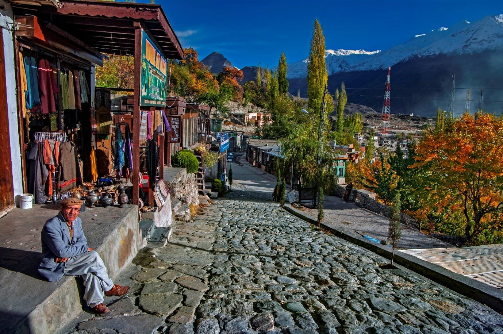
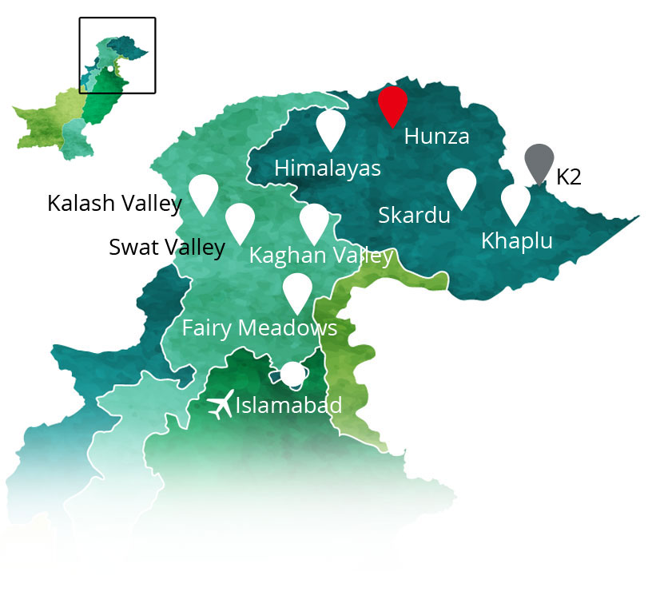
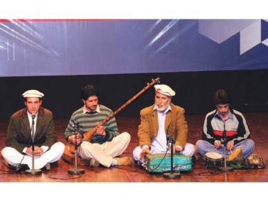

Field Research
An overview of the field research projects.

Documentation & Elicitation of Dawoodi Syntax
Hunza · Pakistan
Pakistan is home to a rich diversity of languages, many of which are spoken by small communities in remote regions and are at risk of disappearing. In the northern valleys of Hunza and Nagar in Gilgit-Baltistan, one of these endangered languages is Dawoodi (a.k.a. Domaki), an Indo-Aryan language spoken by the Domaa community. Closely related to Domari in the Middle East and Romani in Europe, Dawoodi preserves important linguistic connections across regions and centuries of migration.

Karimabad in Hunza Valley
Over time, increased use of dominant regional languages such as Urdu, Burushaski, and Shina has led to a sharp decline in the transmission of Dawoodi to younger generations. As a result, the language faces the real possibility of disappearing within the next generation unless active documentation and preservation efforts continue. Today, Dawoodi is on the brink of extinction. Recent estimates suggest that there are fewer than 100 fluent speakers, with some reports placing the number closer to 50 speakers across both valleys, and almost no transmission to younger generations. Most remaining speakers are elderly, and women tend to retain the language longer due to more limited contact outside the home.
The Dawoodi-speaking community, known as the Domaa, has a long history as musicians, blacksmiths, and craftsmen, roles that were central to the social and economic life of the region. Music, in particular, was not just an occupation but a defining cultural identity. Dawoodi musicians traditionally performed at social gatherings and ceremonial events, contributing to the cultural life of surrounding communities. This musical heritage is still visible today in performances such as this example: Domaki Song by Ehtasham from Mominabad, Hunza

Despite the importance of these professions, the community has historically faced social marginalization, often being associated with lower social status and restricted to specific occupations and villages. This marginalization shaped patterns of language use, mobility, and interaction with surrounding groups, and continues to influence the community’s linguistic and cultural trajectory today.
The San José State University Dawoodi Language Project has been actively working to document the language through recordings of narratives, conversations, and everyday speech. This work provides an essential foundation for preserving Dawoodi and making linguistic data available for future research.
Building on these efforts, my work focuses specifically on documenting and analyzing Dawoodi syntax. I am particularly interested in how grammatical structures emerge in natural speech and how they can be systematically described through fieldwork and elicitation with speakers. This includes examining patterns such as word order, case marking, verb constructions, and sentence structure.
My goal is to contribute a clearer syntactic description of Dawoodi while it is still possible to work directly with speakers. This research supports broader efforts to preserve endangered languages and to document the linguistic knowledge of communities whose voices are at risk of being lost.